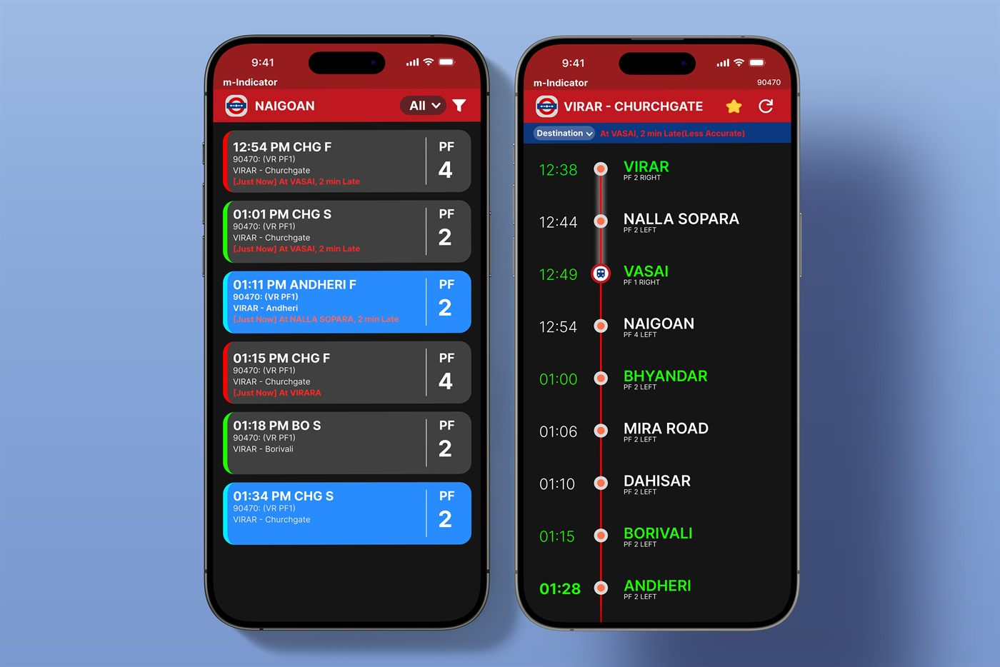
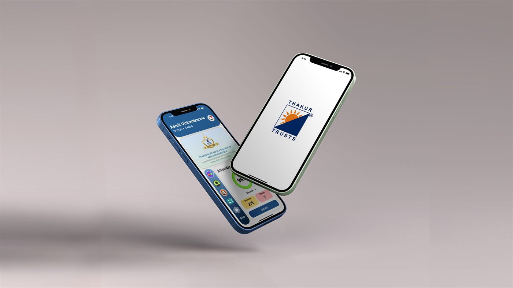
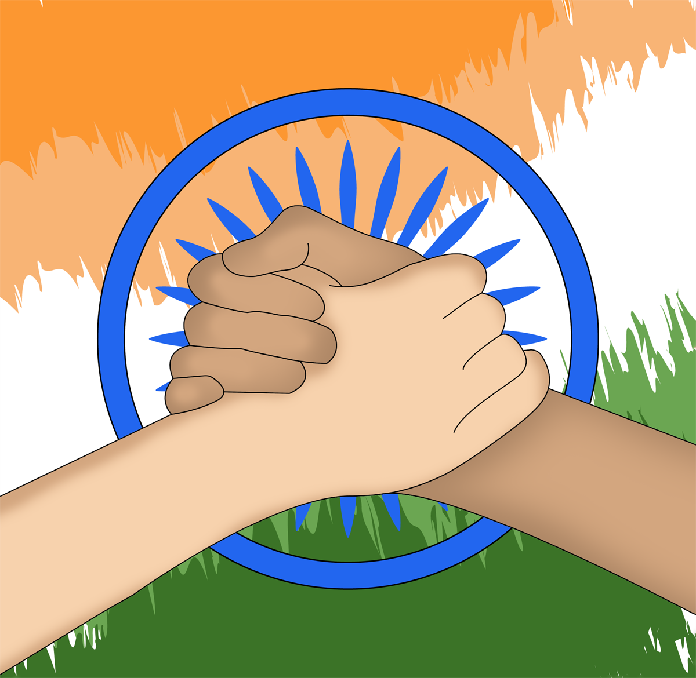
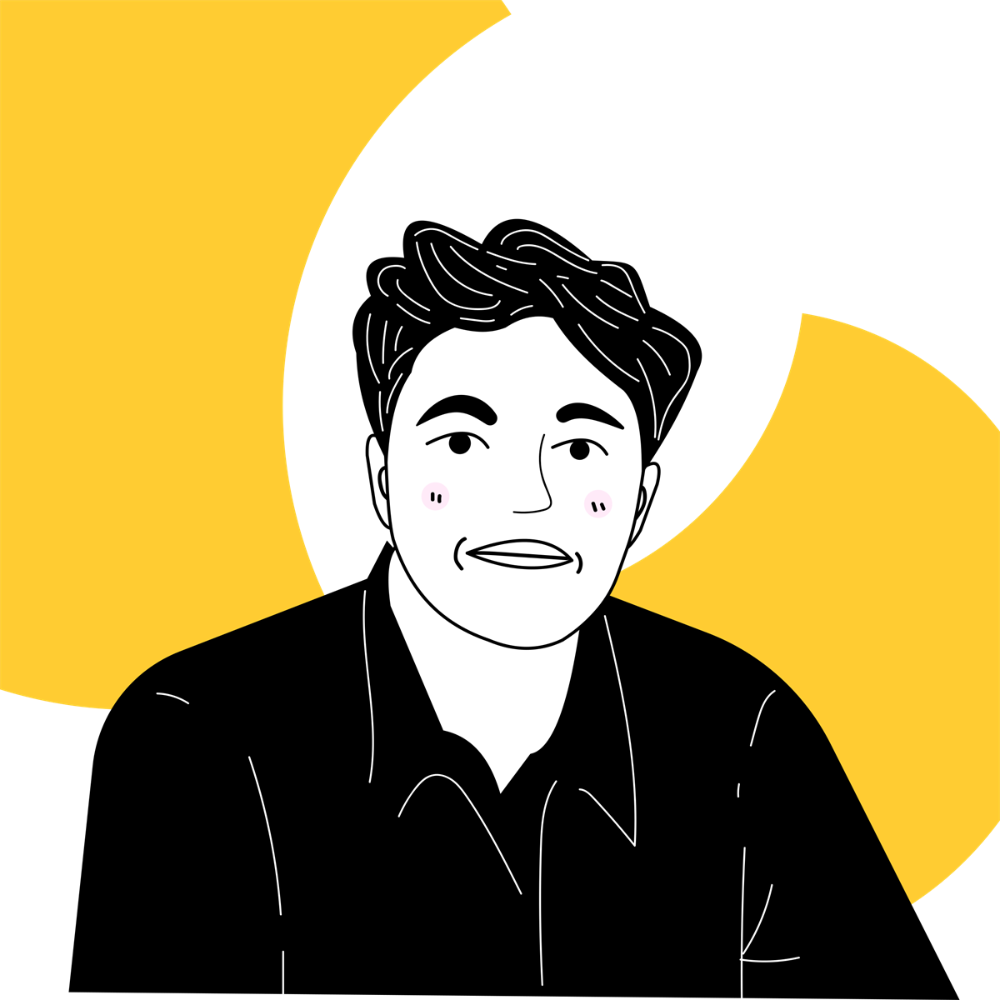
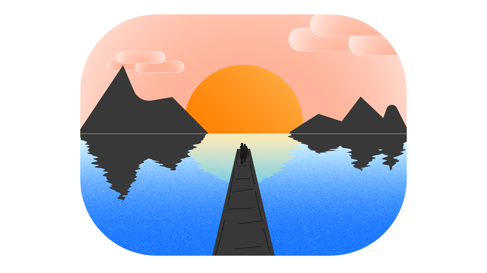
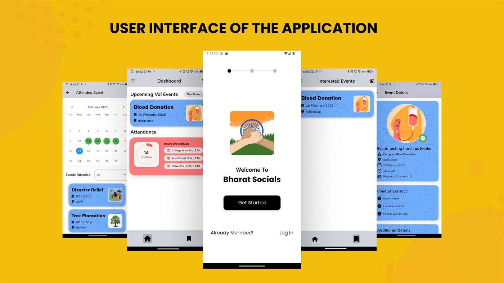

UI Redesign of Applications
Redesigning applications as per trending styles
I craft as a UI/UX Designer
Computer Science student blending design and code, shipping interfaces, brands and 3D that feel as good as they look.
Four disciplines, one obsession , details. Tap a role to jump straight to its work.
UI/UX Design Intern · Mumbai, India
I am currently working as a UI/UX Design Intern at WeFrameTech, where I contribute to the design of websites and mobile applications. Working alongside experienced professionals, I am refining my design process and gaining practical exposure to how real products are planned, designed, and delivered , and I am learning a great deal in the process.
May 2026
, Present
An ongoing internship,
learning a great deal in the process
I'm a Computer Science student with a passion for crafting intuitive, visually engaging digital experiences.
My primary focus is UI/UX design , combining creativity and precision to build interfaces that are both functional and beautiful. Alongside it, I bring versatile skills in graphic design, web development and 3D artistry, so I can contribute across every stage of a product , from concept to execution.
I am currently working as a UI/UX Design Intern at WeFrameTech, where I design websites and mobile applications , an experience that is teaching me how design decisions behave in the real world.
I'm detail-oriented, responsible and always eager to learn new techniques, explore emerging technologies, and push the boundaries of design and development.
Naigaon West, Mumbai, Maharashtra, India
 Figma
Figma
 Photoshop
Photoshop
 Illustrator
Illustrator
 Canva
Canva
 Blender
Blender

Redesigning applications as per trending styles

Style to show shadow and light glow effect

Redesigning the attendance app using Figma

Using Blender I created a 3D model of the Mumbai Local Train

A miniature model of a simple house in Blender 3D

Logo design for an application

Minimalistic vector portrait

Vector artwork of a serene sunset landscape

Complete UI/UX design and development of a volunteer management app